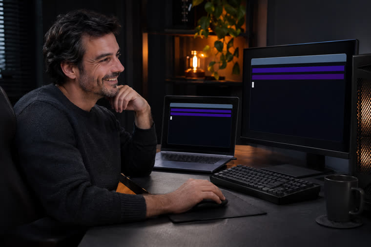

Setting up an AI agent from scratch on every machine gets tiring, and each one ends up different. opencode-distri is a free kit that installs opencode, an open-source AI agent (it reads files, writes, and runs tasks for you), the same way on your computer, a VPS (a rented server on the internet), and Windows. The kit allows only three engines: your ChatGPT subscription, OpenRouter (a service that gives you access to hundreds of models and charges by use), and a model on your own computer. Everything else stays locked, and the agent never opens your password files. It's designed to power your Telegram bots and systems. To use it, you need a computer and an AI assistant like Claude Code or Codex to install it with you.
One agent, the same everywhere
What changes when you set it up by hand on every machine versus installing it with the kit.
😩 Before
Each machine has an agent set up differently. Your PC setup isn't the same as your VPS. You don't remember which model is running where, or whether any of them is using API credits (paid access billed separately from your subscription) without you knowing. When a bot breaks, you don't know where to start.
😌 After
One command installs the same agent, with the same locks, on any machine. A check tells you in seconds what's running and what's blocked. To change the model everywhere, you change it in one place.
Use what you already pay for
Your ChatGPT subscription becomes the agent's engine. No API key needed.
No hidden charges
OpenRouter, which charges by use, and the large model on your PC only turn on with written approval: a line where you say what you've approved. Without it, the engine won't start.
One engine for bots (next step)
The kit is designed to let the same agent power INEMA's Telegram bots and systems. That connection is still being built (see what's left).
What each person gets

💻 People who use several machines
Get: the same agent on your laptop, PC, and VPS, without setting it up three times.
Plus: you always know which model is running on each one.
🤖 People with bots and systems
Get: an open engine for your bots, alongside Claude and Codex, that you can switch without rewriting everything. Connecting it to INEMA's bots is the kit's next step.
Plus: it runs on a VPS without a graphics card, using your subscription.
🛡️ Security researchers
Get: the right place to run an uncensored model and test your own system, through OpenRouter or on your computer (you'll need a graphics card with about 17 GB of memory or more).
Plus: the same password-file lock applies to every model.
How this changes your day
You bought a new VPS
Today: an afternoon spent installing and copying settings.
With the kit: your AI installs it from here, through the VPS connection, and it matches your machine. You just log in to ChatGPT there. (This process hasn't been tested on a real VPS yet.)
You want to switch models
Today: search every bot and script to find where the model name is.
With the kit: change one file, and they all start using the new one.
You're worried about the bill
Today: find out at the end of the month that a test called a paid API.
With the kit: without written approval, the paid profile won't turn on.
🕘 A day, by the hour
09:00 on your PC, you ask the agent to summarize project files, and it answers through your ChatGPT subscription. 14:00 on the VPS, the same agent organizes a folder under the same rules. (Once the bot connection is ready, the 09:00 request can come from Telegram.) 20:00 you want to test an uncensored model on your PC: write the approval for that model and run it. When you're done, turn it off to free up memory.
Video in production
The explainer video for this kit is in production and will appear here when it's published. In the meantime, the step-by-step guide is in How to get started, and the video about uncensored models is already available: Uncensored AI: what it is and how it works.
How it works, in plain English
Think of a car you can fill up at three gas stations, and only those three.
🎫 Station 1: your subscription
Like a monthly fuel plan you already have: sign in with ChatGPT, and the agent uses your subscription. No key and no extra account.
💳 Station 2: OpenRouter
You pay by the gallon. It has hundreds of models, including some uncensored ones. The pump only opens with a note saying what you approved.
🏠 Station 3: your computer
Fuel from home: the model runs on your machine, and nothing leaves it. Since it uses a lot of memory, it also only turns on with approval for that model.
🔒 The locked door
Every other station is blocked by default, including opencode's own "free" models, which are also an API. And the agent never opens files that contain your passwords and keys, no matter which model you use.
🩺 The checkup
A quick check (the "ocd doctor" command, run by your AI) shows the version, whether the lock is in place, what you're logged into, and which model each station will use. It takes seconds and doesn't call any model.
⚠️ What it doesn't promise
There is no Claude subscription inside opencode: Claude only works there with an API key, which means a separate charge. To use Claude with your subscription, keep using Claude Code. The kit also hasn't run with a real model yet, and the Windows version hasn't been tested on a real Windows machine (see the proof).
Uncensored models: where they fit
An "uncensored" model is a version that doesn't refuse requests. It can help you test your system's security, do research, or have an assistant that doesn't shut down on sensitive topics. We published a full article about this, and the kit shows where each option fits.
🏠 On your computer
The most private option: nothing leaves your machine, and you don't need an account or identity. It runs through Ollama, a free program that runs AI models on your PC. For example, the "Uncensored" versions of Qwen 3.8, an open model. You'll need a graphics card with about 17 GB of memory or more.
💳 Through OpenRouter
No graphics card needed; pay by use. It has models that refuse fewer requests, such as "Venice: Uncensored," starting at US$ 0,20 per million input word pieces (tokens) (price checked on 09/11/2026).
🚪 Not yet
Venice and abliteration.ai directly have the most complete catalogs. They stay locked until someone enables that API, and each will get its own lock.
📚 The full article
The differences between model types, a provider table with price, privacy, and identity, and responsible use: removing a model's lock doesn't remove the law.
Ask your AI to install it with you
You don't install anything by hand. The AI reads the kit, checks your machine, explains what it will do, and only continues after you say yes.
📋 Before you start
You need: a computer with Linux or Windows, a ChatGPT subscription (Plus or Pro), and Claude Code or Codex to install it with you. Codex comes with a ChatGPT subscription, so you don't pay anything extra.
Cost: the kit and opencode are free. OpenRouter charges by use and only turns on if you approve it. The model on your PC is free, but requires a graphics card.
Where it was tested (26/11/2026): installed and checked on a Linux PC with a graphics card, without calling a model. The VPS and Windows have installers, but haven't been tested in practice.
1. Open your AI on the computer
Claude Code (from Claude) or Codex (from ChatGPT): assistants that work on your computer and come with their paid subscriptions. They open in a text window, but you can talk to them in English.
2. Paste the request below
It asks the AI to read the kit, check your machine, and explain in plain language what makes sense for you.
3. Say yes to what makes sense
The AI installs it, runs the checkup, and shows you the result. You handle the ChatGPT login once on each machine: on your PC, in a browser window; on the VPS, the AI gives you a line to paste into the terminal.
🧰 Don't have Claude Code or Codex yet?
Each page has a download button and step-by-step instructions: Claude Code · Codex.
You don't need to understand the text below: it's for the AI. Copy and paste it.
Read the "opencode-distri" kit at https://github.com/inematds/opencode-distri (README, PENDENCIAS.md, and docs/). I want opencode to work the same way on all my machines. On this computer: 1. Check the system (Linux, Windows, or VPS), whether I already have Node, Ollama, and a graphics card, and whether an opencode configuration already exists. Don't change anything yet. 2. Tell me in plain language which of the three engines make sense for me (ChatGPT subscription, OpenRouter, local model) and what each one costs. 3. Only after I say yes, run the kit's right installer (instalar/linux.sh or instalar/windows.ps1) and the "ocd doctor" checkup. Show me the result. 4. Don't call any model, use an API key, or download a model unless I ask you to. I'll handle the ChatGPT login. 5. If I also want it on my VPS: ask me for the address and SSH key, install it from here with instalar/remoto.sh, and give me the ChatGPT login line to run there (ssh -t ... opencode auth login openai). Tell me this process hasn't been tested on a real VPS yet.
🌐 Can I use it without installing?
No. The agent works with files on your machine, so it needs to be there. You can view the kit and step-by-step guide on GitHub without installing it.
⬇️ Where can I download it?
There is no windowed installer: the kit is a small folder with installers, and the request above already asks the AI to download it. If you want the files:
🛠️ Are you technical and prefer to do it by hand?
The commands, profiles, settings, and tests are in the GitHub README.
The foundation
🧭 opencode
The agent is opencode, an open-source program, version 2.4.2. The kit doesn't change the program: it just installs it and adds the locks to its settings.
📚 Uncensored providers
The uncensored model information comes from our 09/11/2026 article, based on facts from providers' public pages.
What has been checked
tests, zero failures
The lock blocks other providers, the agent can't see the "free" models, and the checkup passes. No test calls a model.
machine installed
Installed on INEMA's computer, with Linux and a graphics card. The checkup passes.
models called
By our choice, it hasn't run with a real model yet. The first test with a model on the computer itself is on the list of things left to do.
What's left, in order: testing with a model, ChatGPT login, a real VPS and Windows machine, and connecting the agent to the bots. The full list is in PENDENCIAS.md (in Portuguese).
Before you get started
Do I need to know how to code?
No. You paste the request, and the AI installs it with you. The commands are in the README if you prefer to do it yourself.
How much does it cost?
The kit and opencode are free. The engine can be the ChatGPT subscription you already have, OpenRouter (paid by use), or your computer (free, but requires a graphics card).
I use Claude with a subscription. Will this work?
Not through opencode: Claude only works there with an API key. To use Claude with your subscription, keep using Claude Code.
Does it work on Windows?
The kit includes a Windows installer, but it hasn't been tested on a real Windows machine yet.
What about my passwords?
The agent is instructed never to open password or key files. The OpenRouter key stays in your file and is only used at the time, for that request.
Can I use an uncensored model?
Yes, on your computer or through OpenRouter (see where). Removing a model's lock doesn't remove the law: you're still responsible for how you use it.
What about you: how many machines is your agent set up on today, and are they all the same? Free at inema.club, right on the internet.